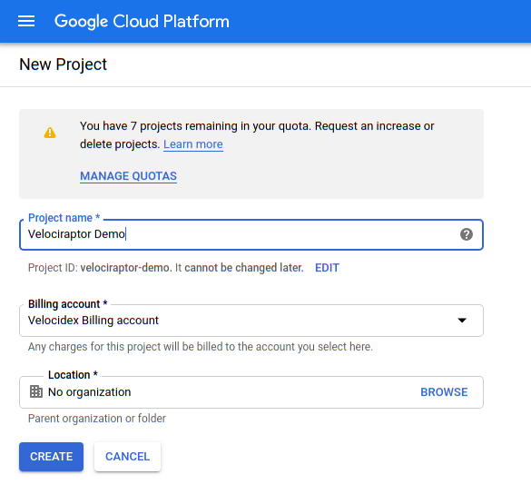
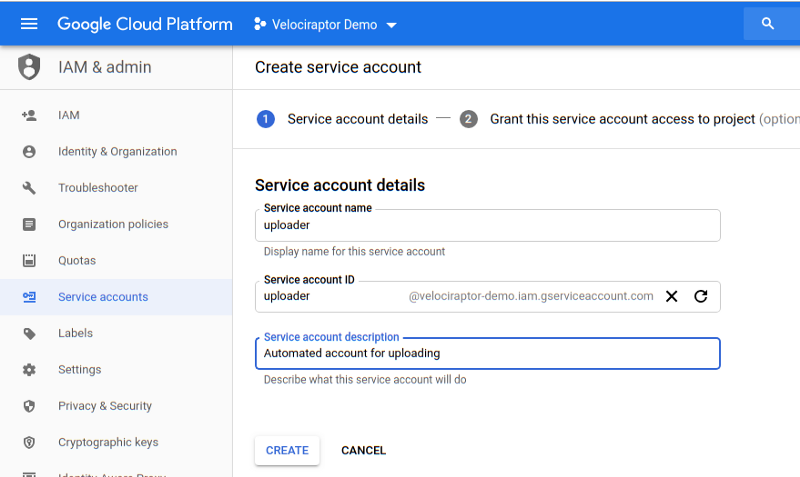
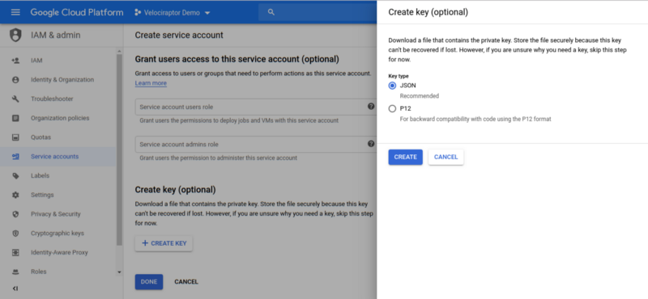
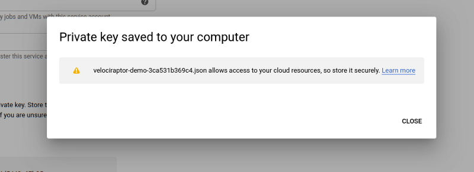
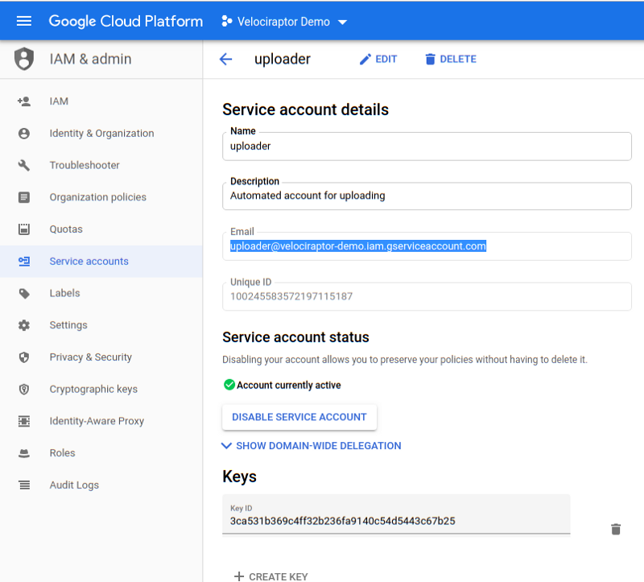
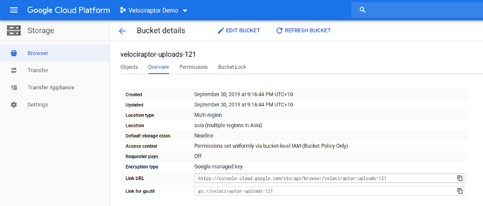
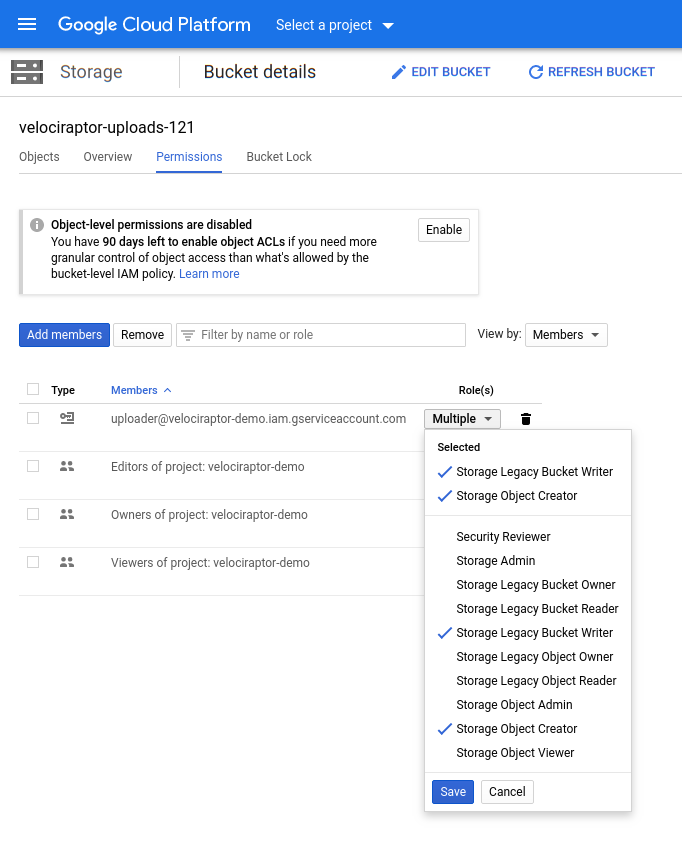
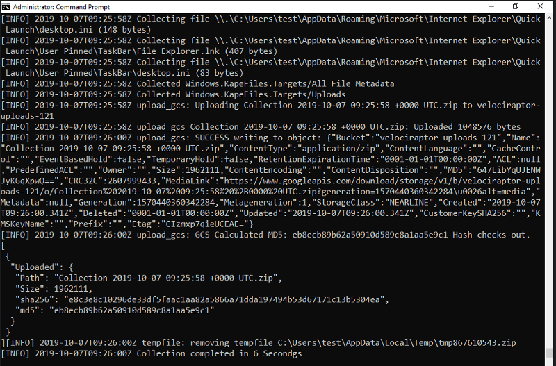

This is the final part of this three part series of articles describing how to use Velociraptor to collect files from an endpoint. Our first part shows how we can use the Velociraptor agent in a typical client/server setting to collect artifacts from one or many endpoints at the push of a button, within seconds.
Part two examined what to do if Velociraptor is not already installed as an agent (or can not be remotely installed). In this case we used an accomplice user with administrator privileges (or group policy) on the endpoint to run the collector interactively — producing a zip file with the triage material within it. We left the task of transporting the file back to the investigator up to the user though. Ideally we would like to have an automated way in which the files can be transported back to us.
This article continues this theme: we devise a way for the collected file to be uploaded to a cloud storage bucket. We will write a new Velociraptor artifact with this functionality, leveraging the previously described collection artifact. It is a good example of how we may customize artifact collection in a flexible way adding arbitrary functionality to Velociraptor as we go along.
Before we can upload files to a bucket we need to have a project in place. For this example I created a new project called “velociraptor-demo”:

Our plan is to distribute to our accomplices the packed binary as before, but this time we want Velociraptor to automatically upload results for us into our bucket.
In order to do this we need a service account with credentials allowing it to upload to our bucket. Go to IAM & Admin / Service Accounts / Create Service Account:

Since the service account will be able to upload by itself (i.e. the user does not authenticate on its behalf), we need to identify it with a JSON key. The key allows Velociraptor to act as the service account on this cloud project. Clicking the Create button will download a JSON file to your system with the private key in it.
 
Note the service account’s email address. Currently this account has no permissions at all — but we will allow it to write objects into our upload bucket later.

Next we create a bucket to store our collected zip files I will call it “velociraptor-uploads-121”:

Selecting the “Permissions” tab, we are able to add the service account as a member — we will only give it the ability to write on a bucket and create new objects. This is important since is means that the service account is unable to read or list objects in this bucket. Since we will embed the service account key in our config file we need to make sure it can not be misused to compromise collections from other machines.

Now we are ready to create our custom artifact. Our artifact will first collect the KapeFiles targets we require into a locally written zip file, and then using the above credentials, upload the zip file to the cloud. Finally we will delete the temporary file from the endpoint. As an added measure of security we specify a password on the collected zip file.
autoexec:
# These parameters are run when the binary is started without args.
# It will just collect our custom artifact and quit.
argv: ["artifacts", "collect", "-v", "AcquireAndUploadToGCS"]
artifact_definitions:
- name: AcquireAndUploadToGCS
parameters:
- name: GCSKey
description: JSON Blob you get from GCS when you create a service account.
default: |
{
"type": "service_account",
"project_id": "velociraptor-demo",
"private_key_id": "XXXXXXX",
"private_key": "XXXXXXX",
"client_email": "uploader@velociraptor-demo.iam.gserviceaccount.com",
"client_id": "XXXXXX",
"auth_uri": "https://accounts.google.com/o/oauth2/auth",
"token_uri": "https://oauth2.googleapis.com/token",
"auth_provider_x509_cert_url": "https://www.googleapis.com/oauth2/v1/certs",
"client_x509_cert_url": "https://www.googleapis.com/robot/v1/metadata/x509/uploader%40velociraptor-demo.iam.gserviceaccount.com"
}
- name: bucket
default: velociraptor-uploads-121
- name: project
default: velociraptor-demo
sources:
- queries:
# This collects the WebBrowsers target from KapeFiles into
# a tempfile, then uploads the tempfile to GCS with the
# above credentials.
- SELECT upload_gcs(
file=Container,
bucket=bucket,
project=project,
name=format(format="Collection %s.zip", args=[timestamp(epoch=now())]),
credentials=GCSKey) AS Uploaded
FROM collect(
artifacts="Windows.KapeFiles.Targets",
args=dict(WebBrowsers="Y"),
password="MyPassword", // Use this password to encrypt the zip file.
output=tempfile( extension=".zip"))
The above artifact is fairly easy to read:
Next we simply embed this configuration file in the binary as we did in part 2:
F:> velociraptor.exe config repack config.yaml my_velo.exe
We can send this file to our accomplice and have them run it as an administrator to simply collect everything and upload to the cloud automatically. Alternatively we can push this binary out via Group Policy Scheduled tasks as well, or even via another EDR tool — it really does not matter how we get the code executing on the endpoint.
The below screenshot shows the debug log from running the collector. We can see the container finalized, then uploaded to GCS with its hashes calculated. When Velociraptor uploads the container to GCS, Google’s server calculate the md5 and return it together with other object attributes. Velociraptor then compares this hash to the one it calculated before to ensure the file landed properly on the cloud bucket.
Finally, then the temp file is removed and the query is complete.

This concludes our three part series about triaging with Velociraptor. Triaging is about collecting files quickly in order to preserve as much of the volatile machine state as possible, then quickly analyze the data for evidence of compromise.
Although Velociraptor is normally installed as a client/server so it is always available on the endpoint, it does not have to be used in this way. The key strength of Velociraptor is its flexibility and ability to adapt to any situation through the use of the powerful Velociraptor Query Language (VQL).
Users who feel comfortable writing their own VQL can adapt Velociraptor easily to evolving situations and collect new artifacts quickly. Check out the official VQL reference, Download the latest version of Velociraptor from GitHub and join the community of power users.